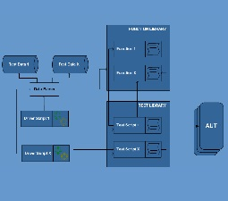
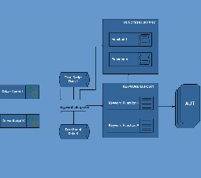

|  |  | ||
| Test Automation | Modular Framework | Data-Driven Framework | Keyword Driven Framework |
|---|
|
Analysis |
Modular |
Data Driven | Keyword Driven |
|---|---|---|---|
| ADVANTAGES |
Structured Hierarchical Systematic |
Data separated from scripts Easy maintanenance |
Scalable Less dependency on software |
| DISADVANTAGES |
Test data found in scripts Scripts are dependent on software |
Dependency on technical expertise Testing, implementing and managing script and data may become costly |
Large effort of implementation Introduces restriction to formats |
What is the most recommended test automation framework?
The correct answer is none of the above! The most recommended test framework is a hybrid test framework.